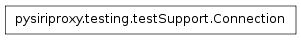
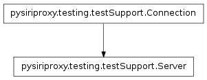
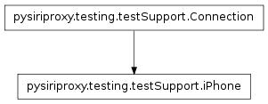

The testSupport module
The testSupport class contains classes and utility functions designed
to aid the process of writing test modules for pysiriproxy.
The Connection class

-
class pysiriproxy.testing.testSupport.Connection[source]
The Connection class implements the basic functionality of a
connections.Connection which is used in responding to a
request from Siri. This Connection class is compatible with
the connections.ConnectionManager and the PluginManager
and is used for testing purposes.
-
Callback
The Callback property defines the callback function that is called
in the event that an object is injected into the output stream of a
connection.
-
Direction
The Direction property defines the direction that data is traveling for
this Connection.
-
RefId
The RefId property defines the reference ID for this Connection.
-
classmethod getDirection()[source]
Get the data direction for this Connection.
-
classmethod getRefId()[source]
Return the RefId for this Connection.
-
classmethod injectObjectToOutputStream(obj)[source]
Inject the given object to the output stream.
- obj – The object to inject to the output stream
The Server class

-
class pysiriproxy.testing.testSupport.Server[source]
Create a Server Connection for testing.
-
Direction
Define the direction for this Connection to indicate that it is from
Apple’s web server.
-
RefId
Define the reference ID for the server Connection.
The iPhone class

-
class pysiriproxy.testing.testSupport.iPhone[source]
Create an iPhone Connection for testing.
-
Direction
Define the direction for this Connection to indicate that it is from
the iPhone.
-
RefId
Define the reference ID for the iPhone Connection.